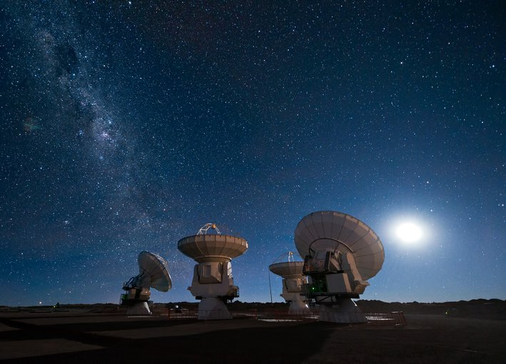
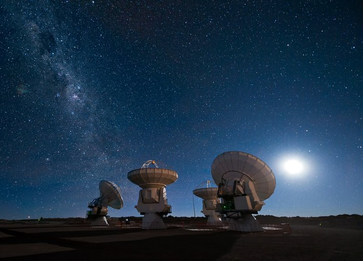

Webb espacial
 

Top de estrellas más masivas
- R136a1,estrella hipergigante azul
- Estrella de la Nebulosa de Peonía
- Estrellla Pistola
Misiones espaciales
- Apollo 8
- Géminis
- Apollo 1
- Luna 1
- Curiosity
Astrobiología
La astrobiología es el estudio del origen, evolución y distribución de la vida en el universo.
¿Comenzó entonces la vida microbiana? En caso afirmativo, ¿evolucionó? Esas preguntas siguen sin respuesta,
pero esto es lo que se sabe: si hubiera ocurrido una segunda génesis en Marte (o en la luna Europa de Júpiter,
en la luna Encélado de Saturno o en cualquier otro lugar de nuestro sistema solar), aumentaría considerablemente
la probabilidad de que existan muchas otras formas de vida en esos miles de millones de exoplanetas y exolunas
conocidos ahora que orbitan estrellas y planetas distantes. Un origen de la vida en la Tierra podría ser el
resultado de un camino notable e inexplicable hacia la vida. Dos orígenes en un mismo sistema solar sugieren
fuertemente que la vida es común en el universo.
Con los avances en los instrumentos y el conocimiento que hacen posible la búsqueda de exoplanetas,
el enfoque se ha refinado cada vez más para identificar planetas que se encuentren en zonas habitables, es decir,
a distancias de sus estrellas anfitrionas que permitirían que el agua permanezca al menos periódicamente líquida
en la superficie de un planeta. La búsqueda de exoplanetas nació en los campos de la astronomía y la astrofísica,
pero siempre ha estado estrechamente relacionada con la astrobiología. Al igual que con muchas misiones de la NASA,
el impulso amplio e intenso de encontrar y comprender planetas y lunas en zonas habitables
no solo mejora considerablemente la astrobiología, sino que también se nutre de la astrobiología.
El Pasado como Guía para el Futuro
La investigación en astrobiología está teniendo lugar porque ha llegado su momento. Científicos de todo el país y de todo el mundo están sumergiéndose en cuestiones sobre el origen de la vida y la vida más allá de la Tierra, y están desarrollando trabajos emocionantes y de vanguardia. Sin embargo, la NASA también tiene una "estrategia" en astrobiología que describe las líneas prometedoras de investigación que la agencia podría respaldar, desde lo altamente específico hasta lo amplio y general. A continuación se muestra una muestra de ejemplos:
- ¿Cuáles fueron los pasos que llevaron a los materiales inanimados, como rocas, sedimentos, compuestos orgánicos y agua, a unirse y construir organismos vivos con genes replicantes, paredes celulares y capacidad de reproducción?
- ¿Qué llevó a la proliferación de nuevas formas de vida en la Tierra?
- ¿Cómo llegan el agua y los compuestos orgánicos esenciales a planetas y lunas, y cómo interactúan con los planetas y lunas en los que aterrizan?
- ¿Es posible determinar si pueden existir microbios en la superficie de planetas a partir de los productos químicos y minerales presentes, incluso debajo de la superficie del planeta?
- ¿Es posible, e incluso probable, que la vida exista en otros lugares basada en elementos distintos al carbono y en un sistema diferente al ADN? ¿Podría incluso existir tal vida aquí en la Tierra, pero aún no haber sido detectada?
Origen del universo
Desde tiempos inmemoriales hemos tratado de conocer cómo se formó el universo. La respuesta más común se basa en la teoría del Big Bang, pero no es la única.La teoría más conocida sobre el origen del universo se centra en un cataclismo cósmico sin igual en la historia: el Big Bang. Esta teoría surgió de la observación del alejamiento a gran velocidad de otras galaxias respecto a la nuestra en todas direcciones, como si hubieran sido repelidas por una antigua fuerza explosiva. Con el exitoso lanzamiento y despliegue del telescopio espacial James Webb la comunidad científica pretenden obtener más datos sobre el origen del universo. Con esta nueva herramienta en el espacio, los astrónomos pretenden buscar en el universo, tanto en el espacio como en el tiempo, cosas nunca vistas antes. Y en 2023, estas observaciones ya han dado sus frutos y permitido a los científicos saber más sobre el pasado del universo. En abril de 2023, la Agencia Espacial Europea anunció que ya tenían pruebas de siete galaxias que serían más antiguas conocidas hasta la fecha. Según los astrónomos, estas formaciones de estrellas datarían de 650 millones de años después del Big Bang los que "las haría las galaxias más tempranas que se han podido confirmar espectroscópicamente".
Origen de las estrellas
Las estrellas nacen dentro de nubes de polvo dispersas por la mayoría de las galaxias. Un ejemplo familiar de
una nube de polvo de este tipo es la Nebulosa de Orión. La turbulencia en el interior de estas nubes da origen
a conglomerados con suficiente masa como para que el gas y el polvo comiencen a colapsar debido a su propia
atracción gravitatoria. A medida que la nube se colapsa, el material en el centro comienza a calentarse.
Conocido como protostar, es este núcleo caliente en el corazón de la nube colapsante el que se convertirá algún día
en una estrella.
Los modelos informáticos tridimensionales de formación estelar predicen que las nubes giratorias de gas y polvo
en colapso pueden dividirse en dos o tres grupos, lo que explicaría por qué la mayoría de las estrellas de la Vía
Láctea están emparejadas o en grupos de múltiples estrellas. A medida que la nube se colapsa, se forma un núcleo
denso y caliente que comienza a acumular polvo y gas. No todo este material termina formando parte de una estrella:
el polvo restante puede convertirse en planetas, asteroides o cometas, o bien puede permanecer como polvo.
En algunos casos, la nube puede no colapsar a un ritmo constante. En enero de 2004, un astrónomo aficionado
llamado James McNeil descubrió una pequeña nebulosa que apareció inesperadamente cerca de la nebulosa Messier 78,
en la constelación de Orión. Cuando los observadores de todo el mundo apuntaron sus instrumentos hacia la Nebulosa
de McNeil, encontraron algo interesante: su brillo parecía variar. Observaciones realizadas con el Observatorio de
Rayos X Chandra de la NASA proporcionaron una explicación probable: la interacción entre el campo magnético de la
joven estrella y el gas circundante provoca aumentos episódicos de brillo.
Estrellas y sus Destinos
En general, cuanto más grande es una estrella, más corta es su vida, aunque todas, excepto las más masivas, viven durante miles de millones de años. Cuando una estrella ha fusionado todo el hidrógeno en su núcleo, las reacciones nucleares cesan. Privado de la producción de energía necesaria para sustentarse, el núcleo comienza a colapsar hacia adentro y se vuelve mucho más caliente. Aún hay hidrógeno disponible fuera del núcleo, por lo que la fusión de hidrógeno continúa en una capa que rodea al núcleo. El núcleo cada vez más caliente también empuja las capas exteriores de la estrella hacia afuera, haciendo que se expandan y se enfríen, transformando la estrella en una gigante roja. Si la estrella es suficientemente masiva, el núcleo en colapso puede volverse lo suficientemente caliente como para mantener reacciones nucleares más exóticas que consumen helio y producen una variedad de elementos más pesados hasta el hierro. Sin embargo, estas reacciones ofrecen solo un alivio temporal. Gradualmente, los fuegos nucleares internos de la estrella se vuelven cada vez más inestables: a veces arden con furia, otras veces se apagan. Estas variaciones hacen que la estrella pulse y arroje sus capas exteriores, envolviéndose en un capullo de gas y polvo. Lo que sucede a continuación depende del tamaño del núcleo.